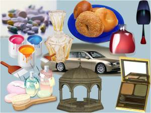
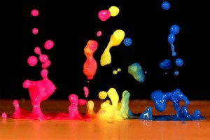
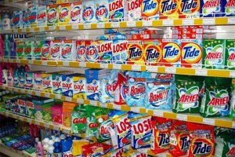

Rolul chimiei în viaţa cotidiană
Din toate timpurile, chimia a fost larg răspîndită în activitatea omului. Încă în antichitate apăreau meșteșuguri la baza cărora se afla chimia, cum ar fi: dobîndirea metalelor, a sticlei, a obiectelor din ceramică.
Un rol importat îl are anume chimia organică. Unele substanţe organice îi sunt cunoscute omului zeci de ani, altele numai se studiaza, iar celelalte încă aşteptă rîndul său. Dar un lucru este sigur: chimia organică niciodată nu se va putea epuiza. Diversitatea ei se ascunde în natura ei.
Consider că este important să ştim că alimentele, îmbrăcămintea, încălțămintea, medicamentele, coloranţii, detalii de construcții, electrice, radiotehnice și TV, fibrele sintetice, materialele plastice, cauciucul şi explozivi – este doar o listă incompletă a ceea ce oferă chimia organică omului.
Concurînd cu însăşi natura, chimiştii-organici au sintezat diverse legături care dispun de proprietăţi necesare şi folositoare omului. Un exemplu ar fi coloranţii chimici care, după aspect frumos şi diversitate, depăşesc cei naturali; un arsenal imens de produse medicamentoase care ajută la tratarea bolilor umane; produsele sintetice de curăţenie, detergenţii, cu care nu poate concura săpunul simplu şi multe altele. Toate aceste substanţe într-atît au pătruns în vieţile noastre, încît nici nu ne mai putem imagina viaţa fără ele.
Chimia oferă în mîinile omului oportunităţi şi puteri uriaşe, dar necesită o utilizare responsabilă şi competentă!
